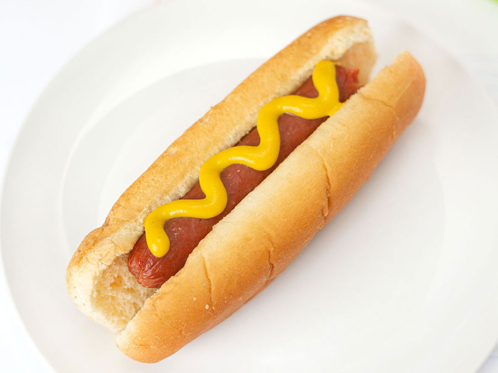

You have taken the left path, you wake through the dark path with your stubby little legs. The path is long, a little to long for your own liking but you digress, after all it will all be worth it in the end for the hotdog. You haven't encountered any dangers as you walk along the path and it makes you wonder with everyone was just exaggerating.
After a undetermined amount of time, you have encountered a...Kitchen? A well furnished one at that. It looks out of place compared to the dark atmsophere of the dungeon. You looked around and spotted a frigerator. You made your way to it and opened it.

SUCCESS! YOU HAVE FOUND THE HOTDOG!
You hold the hotdog in your hand to make sure if its real. And it is! Your parents said it wasn't worth possibly getting yourself killed in the dungeon for the slim chance to find a snack you could've made at home, but you have proven them wrong!

Return to homepage